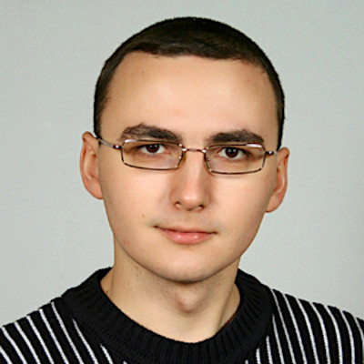
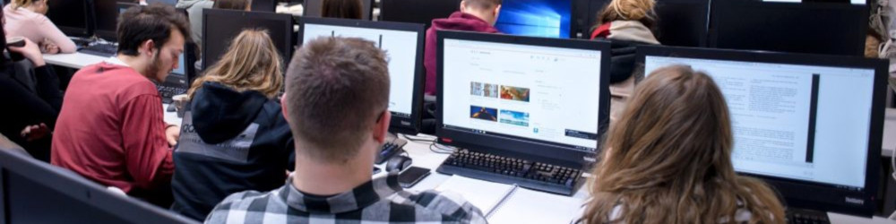
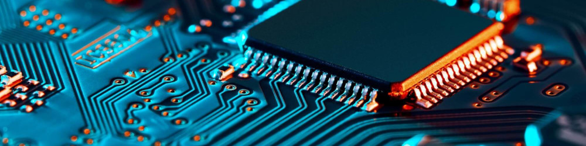
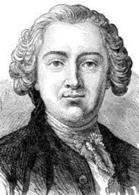
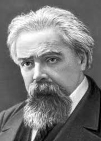
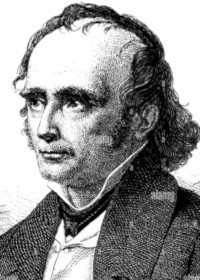
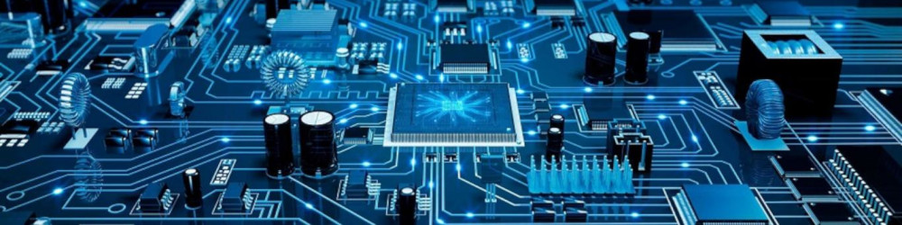

Журавель Роман
Сайт викладача

Мої принципи Публікації Підвищення кваліфікації Сертифікати Нагороди Освітнє середовище Методичні матеріали Зв'язок
Загальні відомості
Освіта
2009 Сумський державний університет, кваліфікація магістр з електронних систем
2005 Прилуцький агротехнічний технікум, кваліфікація технік-електрик
Посади
2010-2025 Викладач спеціальних дисциплін
2018-2021 Голова циклової комісії спеціальних комп'ютерних дисциплін
2006-2010 Завідуючий інформаційним центром коледжу
2005-2010 Лаборант на відділенні "Електрифікація і автоматизація сільського господарства"

Дисципліни
2024-2025 Основи цифрового керування та програмування мікроконтролерів
2024-2025 Інформаційні технології
2023-2025 Комп'ютерні мережі
2016-2025 Архітектура комп'ютерів
2016-2025 Алгоритми та методи обчислень
2011-2018, 2024-2025 Основи автоматики
2018-2024 Основи програмної інженерії
2017-2021, 2023-2024 Організація баз даних
2011-2020 Комп'ютери та комп'ютерні технології
2011-2015 Інформаційні та комп'ютерні технології
2010 Основи інформатики та обчислювальної техніки

Досягнення в коледжі
2020 В лабораторії "Контролерної техніки" створив лабораторні стенди на базі контролерів Unitronix V700 і написав програми до них для вивчення принципів функціонування контролерної техніки.
2014 Обладнав і оформив "Кабінет комп’ютерної техніки" для проведення занять зі спеціальності 123 Комп'ютерна інженерія. На той час перший кабінет на нововідкритому відділенні.
2007 Організував інформаційний центр в коледжі для всебічної IT підтримки інфраструктури коледжу. На даний момент цей підрозділ еволюціонував і займається веденням бази ЄДЕБО зі сторони коледжу.
Мої принципи

Знання деяких принципів легко компенсує незнання деяких фактів.
Клод Гельвецій
філософ-матеріаліст

Справжня освіта здобувається тільки шляхом самоосвіти.
Микола Рубакін
просвітник, учений, письменник

Неправильне знання, гірше, ніж незнання.
Адольф Дістервег
педагог-демократ

Просвітництво має своєю метою виховання характеру.
Герберт Спенсер
філософ і соціолог
Освітнє середовище
ІНФОРМАЦІЙНІ ТЕХНОЛОГІЇ1 пр. комп. 2024-2025 н.р.
АЛГОРИТМИ І МЕТОДИ ОБЧИСЛЕНЬ
1 пр. комп. 2024-2025 н.р.
АЛГОРИТМИ І МЕТОДИ ОБЧИСЛЕНЬ
2 комп. 2024-2025 н.р.
АРХІТЕКТУРА КОМП'ЮТЕРІВ
2 пр. комп. 2024-2025 н.р.
АРХІТЕКТУРА КОМП'ЮТЕРІВ
3 комп. 2024-2025 н.р.
КОМП'ЮТЕРНІ МЕРЕЖІ
2 пр. комп. 2024-2025 н.р.
КОМП'ЮТЕРНІ МЕРЕЖІ
3 комп. 2024-2025 н.р.
КОМП'ЮТЕРНІ МЕРЕЖІ
4 комп. 2024-2025 н.р.
ОСНОВИ АВТОМАТИКИ
2-А пр. ел. 2024-2025 н.р.
ОСНОВИ АВТОМАТИКИ
2-Б пр. ел. 2024-2025 н.р.
ОСНОВИ ЦИФРОВОГО КЕРУВАННЯ ТА ПРОГРАМУВАННЯ МІКРОКОНТРОЛЕРІВ
3 пр. ел. 2024-2025 н.р.
ПРАКТИКА З ОТРИМАННЯ РОБОЧОЇ ПРОФЕСІЇ
2 пр. комп. 2024-2025 н.р.
ПРАКТИКА З ОТРИМАННЯ РОБОЧОЇ ПРОФЕСІЇ
3 комп. 2024-2025 н.р.
Зв'язок зі мною
roman.zhuravel@ptfc.ukr.education

2020-2025 Roman Zhuravel